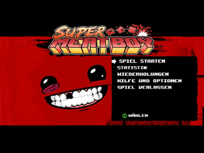
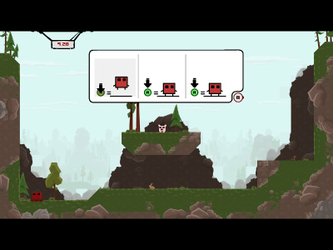

Super Meat Boy
Dieser Artikel wurde für die folgenden Ubuntu-Versionen getestet:
Ubuntu 14.04 Trusty Tahr
Zum Verständnis dieses Artikels sind folgende Seiten hilfreich:
Super Meat Boy  ist ein kommerzielles Jump ’n’ Run-Spiel, in dem der Spieler versucht, seine Freundin Bandage Girl vor dem bösartigen Dr. Fetus zu retten. In den Rettungsmissionen sind Hindernisse zu überwinden und Bosskämpfe zu bestehen. 320 gefährliche Level erfordern eine schnelle Reaktion und das Geschick des Spielers.
ist ein kommerzielles Jump ’n’ Run-Spiel, in dem der Spieler versucht, seine Freundin Bandage Girl vor dem bösartigen Dr. Fetus zu retten. In den Rettungsmissionen sind Hindernisse zu überwinden und Bosskämpfe zu bestehen. 320 gefährliche Level erfordern eine schnelle Reaktion und das Geschick des Spielers.
Im Spiel können verschiedene Charaktere aus anderen Spielen - z. B. Naija, Tim, Josef, Mr. Minecraft und Captain Veridian freigeschaltet werden. Zur Steuerung des Charakters empfiehlt sich die Verwendung eines Controllers.
Hinweis:
Bei integrierten Grafikprozessoren von Intel kann es vorkommen, dass das Spiel nicht funktioniert.
|  |  |
| Hauptmenü | Tutorial |
Installation¶
The Humble Indie Bundle #4¶
Das Spiel aus der Aktion The Humble Indie Bundle #4 herunterladen und installieren [1] .
Nach erfolgreicher Installation kann es über "Anwendungen -> Spiele -> Super Meat Boy" gestartet werden.
Ubuntu Software-Center¶
Super Meat Boy kann über das Software-Center käuflich erworben werden. Dazu ist eine Registrierung bzw. ein Zugang über Ubuntu One erforderlich, welchen man sich aber auch während des Zahlungsprozesses über das Software-Center anlegen kann. Anschließend wird das Spiel automatisch heruntergeladen und installiert. Für zukünftige Updates wird eine neue Paketquelle hinzugefügt.
Konfiguration¶
Über den Menüpunkt "Hilfe & Optionen" gelangt man zu einer Reihe weiterer Optionen:
| Menü | |
| Menüpunkt | Beschreibung |
| "So wird gespielt" | Erläuterungen zur Steuerung. |
| "Steuerung" | Belegung des Controllers. |
| "Einstellungen" | Einstellungen am Sound, der Auflösung und Vollbild-/ Fenstermodus vornehmen. |
Tastenkürzel¶
| Steuerung | |
| Taste(n) | Beschreibung |
| ↑ + ↓ + ← + → | Charakter steuern. |
| Sprung. | |
| ⇧ | Spezialtaste. |


- Erstellt mit Inyoka
-
 2004 – 2017 ubuntuusers.de • Einige Rechte vorbehalten
2004 – 2017 ubuntuusers.de • Einige Rechte vorbehalten
Lizenz • Kontakt • Datenschutz • Impressum • Serverstatus -
Serverhousing gespendet von